36 Organic synthesis
Functional-group interconversion, multi-step routes and route analysis
36 Organic synthesis
本章对应 CIE 9701 2025–2027 syllabus 的 36.1 Organic synthesis。题目部分对应专题题包 7.8 Organic Synthesis (A Level Only)；完整 Easy、Medium、Hard Structured Questions 放在本页底部的 Structured Questions 页面。
Learning objectives
学完本节后，你应该能够：
- identify functional groups in molecules containing more than one functional group;
- predict the properties and reactions of molecules containing several functional groups;
- devise a multi-step synthetic route to a target molecule;
- analyse a synthetic route by identifying the reaction type, reagents and conditions, and possible by-products;
- choose a route with appropriate selectivity, atom economy and separation requirements.
36.1 Organic synthesis
Identifying multiple functional groups
When a molecule contains several functional groups, identify each group independently before predicting its reactions. The same molecule may contain an arene, an alkene, an alcohol, a phenol, an amine, a carbonyl group, a carboxylic acid, an ester, an amide or a nitrile.
The functional group controls the characteristic reaction, while the other groups may alter the rate or position of reaction. For example, a phenolic \(-\)OH group activates the 2-, 4- and 6-positions of an aromatic ring, whereas a \(-\)COOH or \(-\)COCl group is electron-withdrawing and directs electrophilic substitution mainly to the 3- and 5-positions.
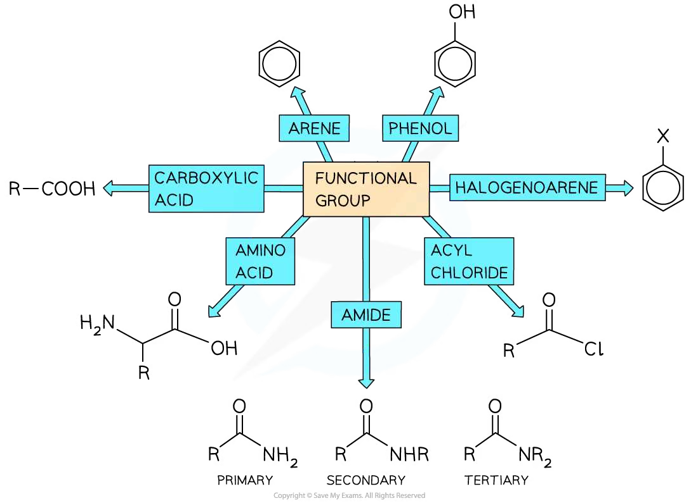
Benzoic acid and aromatic synthesis
Alkyl side chains attached to an aromatic ring can be oxidised completely to a carboxylic acid using hot alkaline potassium manganate(VII), followed by acidification. The carbon attached directly to the ring must have at least one hydrogen atom for this oxidation to occur.
\[\ce{Ar-CH3 ->[KMnO4(aq), OH-, heat][H+] Ar-COOH}\]
Benzoic acid is therefore a useful intermediate in a synthesis. Its carboxylic acid group is electron-withdrawing and directs later electrophilic substitution to the meta position.

Acyl chlorides and amides
Acyl chlorides are very reactive derivatives of carboxylic acids. They undergo nucleophilic addition–elimination with water, alcohols, ammonia and amines.
\[\ce{RCOCl + H2O -> RCOOH + HCl}\]
\[\ce{RCOCl + R'OH -> RCOOR' + HCl}\]
\[\ce{RCOCl + 2R'NH2 -> RCONHR' + R'NH3Cl}\]
An acyl chloride can be made from a carboxylic acid using thionyl chloride, \(\ce{SOCl2}\), or phosphorus pentachloride. The reaction is useful in synthesis because it is rapid and usually gives a higher yield than direct esterification.
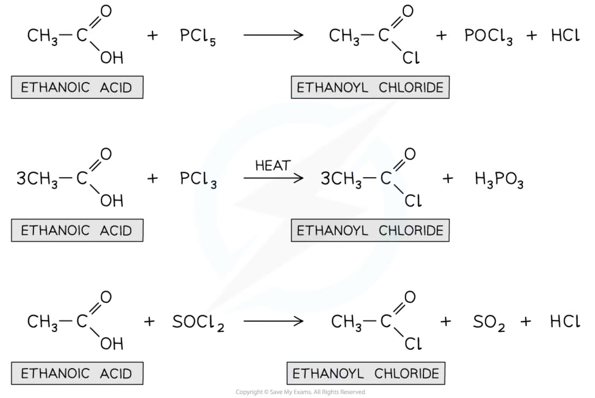
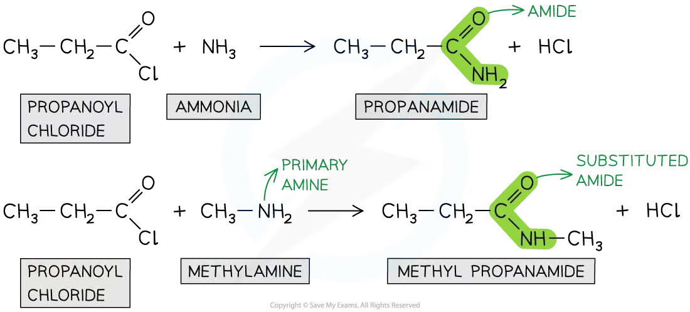
Electrophilic substitution of arenes
In electrophilic aromatic substitution, an electrophile attacks the delocalised \(\pi\) system of an aromatic ring. A temporary positively charged intermediate forms, then loss of \(\ce{H+}\) restores the delocalised ring.
For a Friedel–Crafts acylation:
\[\ce{CH3COCl + AlCl3 -> CH3CO+ + AlCl4-}\]
The acylium ion, \(\ce{CH3CO+}\), is the electrophile. The catalyst is regenerated when the intermediate loses a proton.
Electron-donating groups such as \(\ce{-CH3}\) and \(\ce{-OH}\) activate the 2-, 4- and 6-positions. Electron-withdrawing groups such as \(\ce{-COOH}\), \(\ce{-COCl}\) and \(\ce{-NO2}\) deactivate the ring and direct substitution mainly to the 3- and 5-positions.
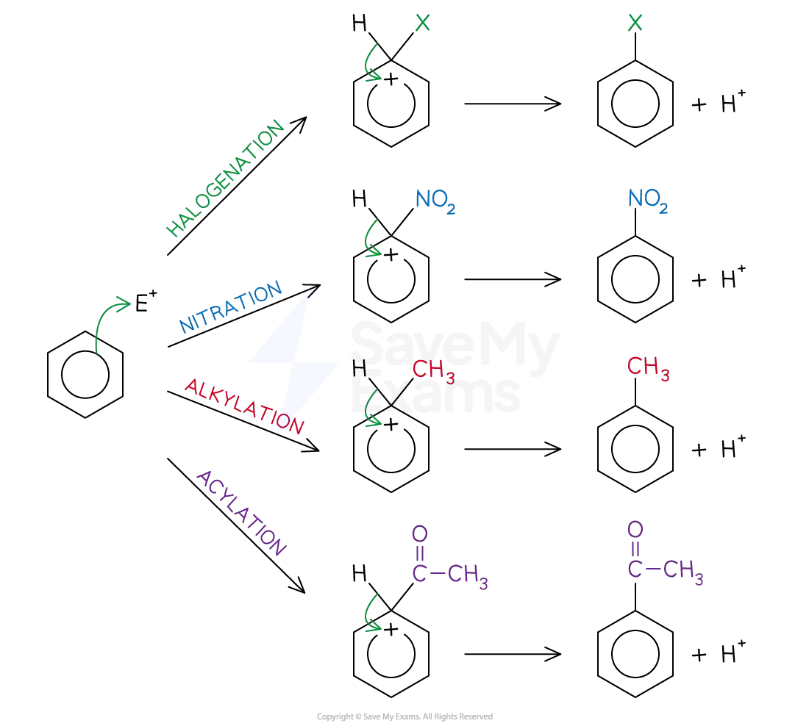
Worked example · Designing a multi-step synthesis
Ethene to 1-aminopropane
Suggest how the following synthesis could be carried out:
Ethene to 1-aminopropane
Add HCl to ethene at room temperature to form chloroethane by electrophilic addition:
\[\ce{CH2=CH2 + HCl -> CH3CH2Cl}\]
Heat chloroethane under reflux with ethanolic KCN or NaCN. Nucleophilic substitution adds one carbon atom and forms propanenitrile:
\[\ce{CH3CH2Cl + CN- -> CH3CH2CN + Cl-}\]
Reduce propanenitrile using \(\ce{LiAlH4}\) in dry ether, followed by hydrolysis, to form 1-aminopropane:
\[\ce{CH3CH2CN + 2H2 ->[LiAlH4] CH3CH2CH2NH2}\]
The route uses three different transformations: electrophilic addition, nucleophilic substitution and reduction of a nitrile.
Phenol: esterification, acid–base reactions and substitution
Phenol is less reactive than an aliphatic alcohol in some reactions, but its aromatic ring is strongly activated by the \(\ce{-OH}\) group. Phenol reacts with acyl chlorides to form phenyl esters:
\[\ce{C6H5OH + CH3COCl -> C6H5OCOCH3 + HCl}\]
It is a weak acid. It reacts with sodium hydroxide to form sodium phenoxide, but it is not sufficiently acidic to react appreciably with aqueous sodium carbonate:
\[\ce{C6H5OH + NaOH -> C6H5ONa + H2O}\]
The activated ring undergoes bromination readily, often producing a 2,4,6-tribromophenol precipitate, and nitration can occur under milder conditions than for benzene.
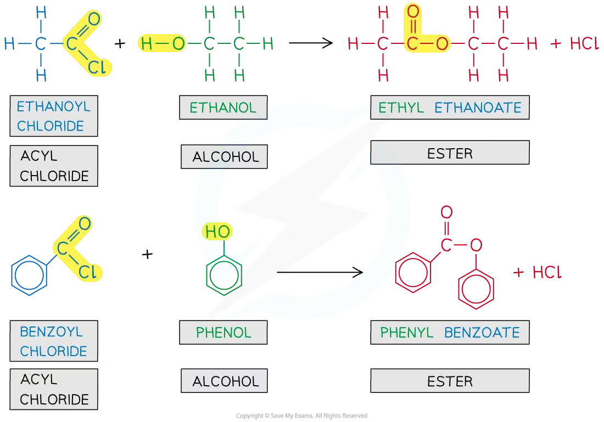
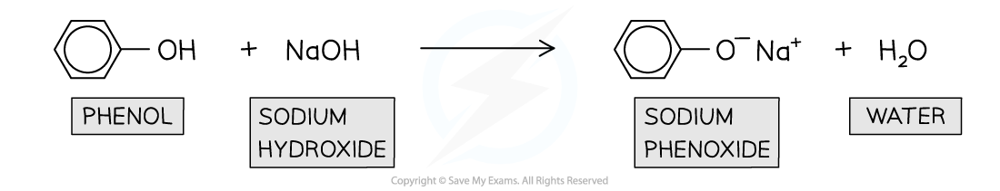
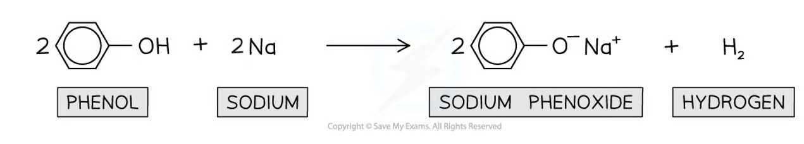
Building an aliphatic synthetic route
Common transformations that extend or modify an aliphatic carbon chain include:
- alkene + \(\ce{HCl}\) or \(\ce{HBr}\): electrophilic addition to form a halogenoalkane;
- halogenoalkane + aqueous \(\ce{OH-}\): nucleophilic substitution to form an alcohol;
- halogenoalkane + ethanolic \(\ce{CN-}\): nucleophilic substitution that increases the carbon chain by one carbon;
- primary alcohol + acidified dichromate(VI), distil: oxidation to an aldehyde;
- aldehyde + acidified dichromate(VI), reflux: oxidation to a carboxylic acid;
- ketone or carboxylic acid + \(\ce{LiAlH4}\): reduction;
- nitrile + \(\ce{LiAlH4}\): reduction to a primary amine.
The reagent, solvent, temperature and method of isolation must all be specified. For example, distillation removes an aldehyde as it forms, whereas reflux allows further oxidation to a carboxylic acid.
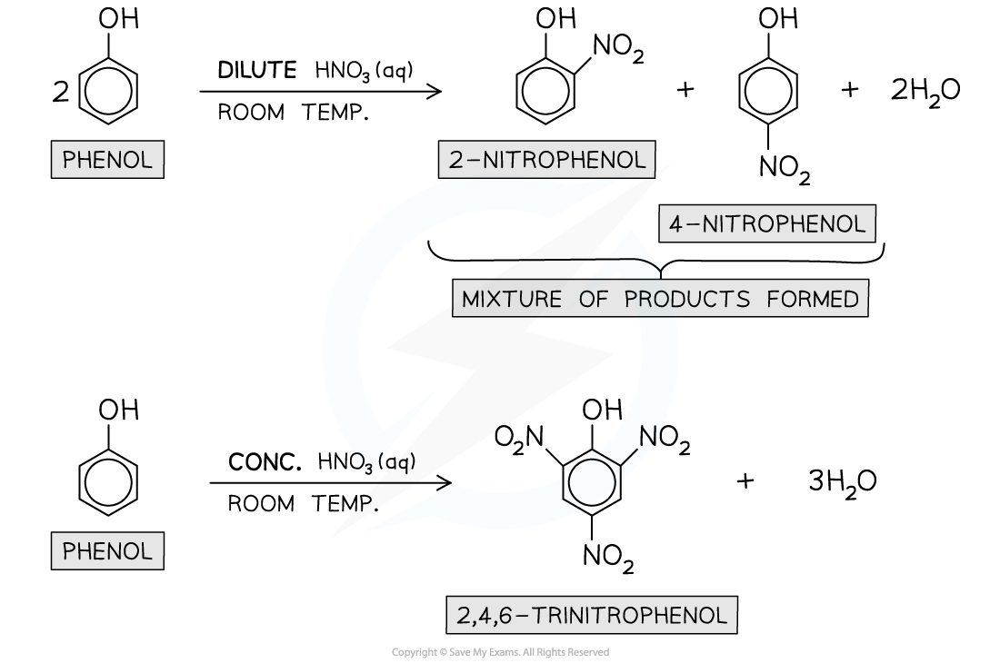
Building an aromatic synthetic route
An aromatic synthesis should be planned backwards from the target. Identify the last functional-group change first, then select an earlier intermediate that can be converted selectively.
Useful sequences include:
\[\ce{benzene ->[conc. HNO3/H2SO4] nitrobenzene ->[Sn/HCl, heat] phenylamine}\]
\[\ce{benzene ->[RCl/AlCl3] alkylbenzene ->[KMnO4, reflux][H+] benzoic\ acid}\]
\[\ce{benzene ->[RCOCl/AlCl3] aryl\ ketone ->[NaBH4] secondary\ alcohol}\]
The order matters. A methyl group activates the 2-, 4- and 6-positions, while a carbonyl-containing group such as \(\ce{-COCl}\) directs substitution meta. A shorter route is not automatically better if it gives the wrong isomer or a mixture that is difficult to separate.
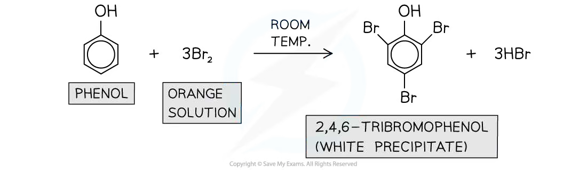
Worked example · Analysis of synthetic routes
Reaction types, reagents, conditions and by-products
Some reactions of compound A are shown below.
1. Give the structure of compound B and state the type of reaction by which this compound is formed from compound A.
2. What are the suitable reagents for reaction 2?
3. Suggest a more effective way to synthesise compound D from compound A.
4. What are the possible by-products of reaction 4?
- Reaction 1 is hydrogenation of the aromatic ring. Compound B is the corresponding cyclohexane derivative. The reaction is reduction (addition of hydrogen).
- Oxidise the alkyl side chain using hot alkaline \(\ce{KMnO4}\) under reflux, then acidify with dilute sulfuric acid. The side chain is converted into a carboxylic acid.
- A more effective route is to convert the carboxylic acid into an acyl chloride using \(\ce{SOCl2}\), then react the acyl chloride with the alcohol. This is faster and more complete than direct esterification with the carboxylic acid.
- The acyl-chloride esterification produces hydrogen chloride, HCl. If direct esterification is used, the possible by-product is water, H\(_2\)O. Any unreacted starting material or hydrolysis product may also require separation.
The key route-analysis questions are: what bond changes, which reagent performs that change, what conditions give the desired selectivity, and what additional substances must be removed afterwards.
Multi-step synthesis and route analysis
For a proposed route, analyse every arrow using four questions:
- What reaction type occurs? For example, oxidation, reduction, nucleophilic substitution, electrophilic substitution, esterification or hydrolysis.
- Which reagent is required? Give the actual laboratory reagent, not only the reactive ion.
- What conditions are needed? Include solvent, catalyst, temperature, pressure, reflux or distillation where relevant.
- What can go wrong? Consider competing products, regioisomers, over-oxidation, incomplete reaction, hydrolysis, low atom economy and difficult separation.
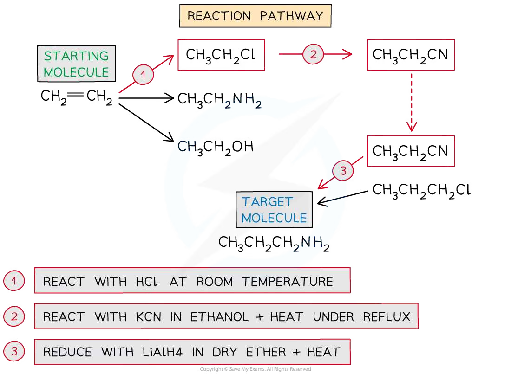
The best route is usually one that gives the correct isomer in a small number of selective steps, uses readily available reagents, minimises waste and avoids difficult separations. A route with fewer arrows is not necessarily better if one step gives the wrong directing effect or a mixture of products.
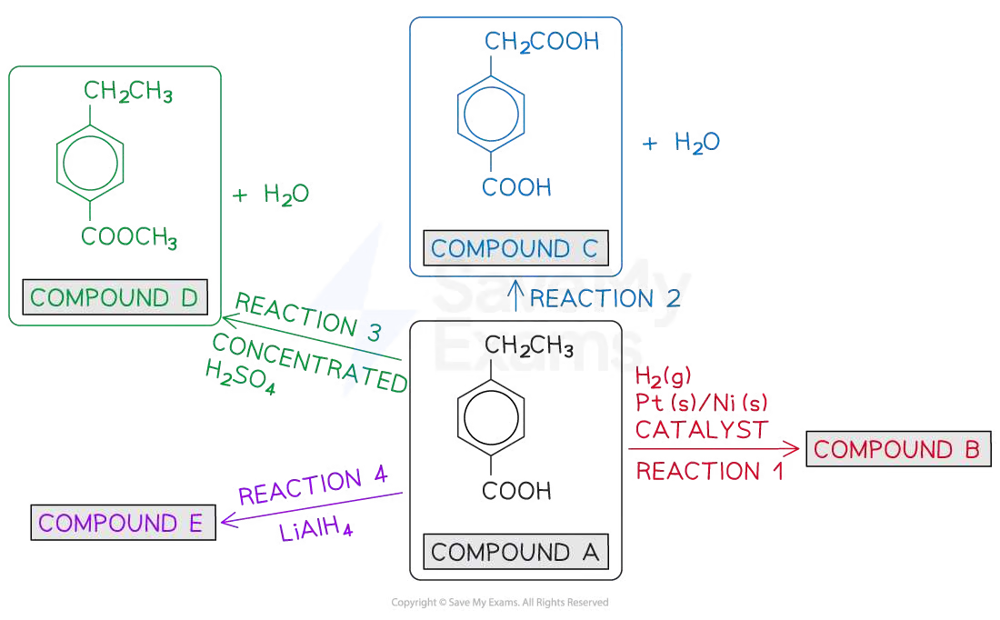
Chapter checklist
Practice questions
7.8 Organic Synthesis (A Level Only) - Structured Questions
本页保留 7.8 题包中的全部 Structured Questions：Easy 5 题、Medium 5 题和 Hard 4 题。题目保留完整英文题干、所有分问、原始分值和题目中需要的独立图；答案按 Model Answers 整理，结构题、路线题和机制题均给出完整解答步骤。
7.8 Organic Synthesis (A Level Only) - Easy
Example 1 · Morphine and heroin · 7.8 SQ Easy Q1
Morphine is a naturally occurring opiate found in opium from poppies. Heroin is a synthetic opiate that can be synthesised from morphine. Fig. 1.1 shows the chemical structure of morphine and heroin.
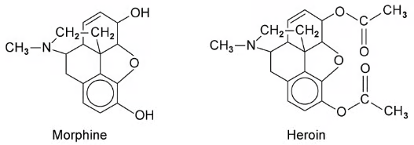
(a) What functional groups are found in morphine? [2 marks]
(b) Identify the functional group(s) present in heroin, but not in morphine. [1 mark]
(c) State the reagents and conditions needed to turn morphine into heroin. [2 marks]
(d) Predict and explain what you would see if morphine and heroin were separately reacted with warm acidified potassium dichromate solution. [3 marks]
Show mark scheme / model answer
- (a) Any two of: alcohol/hydroxyl, alkene/alkenyl, phenol, tertiary amine and ether.
[2] - (b) An ester group, specifically an ethanoate ester.
[1] - (c) React morphine with ethanoic acid or ethanoic anhydride, using a concentrated acid catalyst such as concentrated sulfuric acid, and heat. This is esterification/acylation of the alcohol groups.
[2] - (d) Morphine turns the acidified potassium dichromate solution from orange to green because it contains a secondary alcohol group that can be oxidised. Heroin gives no change and the solution remains orange because the corresponding alcohol groups have been converted into ester groups.
[3]
Example 2 · Farnesol and functional-group interconversion · 7.8 SQ Easy Q2
This question is about farnesol, a chemical found in essential oils and used in perfumes, especially in lilac perfumes. The structure of farnesol is shown in Fig. 2.1.
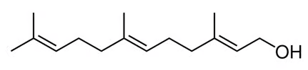
(a) Identify two different functional groups found in farnesol and identify their locations in Fig. 2.1. [2 marks]
(b) Describe how you would expect farnesol to react if shaken with a little bromine water. [1 mark]
Fig. 2.2 shows a two-step synthesis of a compound made from farnesol.
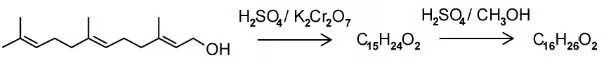
(c) Suggest a new functional group present in the product of the first step. [1 mark]
(d) Suggest a functional group present in the final product, but not in farnesol. [1 mark]
Show mark scheme / model answer
- (a) Farnesol contains an alkene/alkenyl group and a primary alcohol/hydroxyl group. The alkene groups are the carbon–carbon double bonds in the chain; the hydroxyl group is the terminal \(\ce{-OH}\).
[2] - (b) The bromine water is decolourised, because bromine adds across the carbon–carbon double bond(s).
[1] - (c) A carboxylic acid group is formed when the primary alcohol is oxidised with acidified dichromate(VI).
[1] - (d) An ester group is present in the final product. The carboxylic acid formed in step 1 reacts with methanol in the presence of sulfuric acid.
[1]
Example 3 · Route to propan-1-ol · 7.8 SQ Easy Q3
The four-step synthesis to form propan-1-ol from a ketone is outlined in Fig. 3.1.
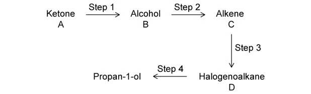
(a)(i) Name a possible halogenoalkane, D, that undergoes nucleophilic substitution in step 4 to form propan-1-ol. [1 mark]
(a)(ii) Give the reagents and conditions for step 4. [2 marks]
(b) Deduce the identity of the alkene, C, in Fig. 3.1. [1 mark]
(c) Suggest why the electrophilic addition reaction in step 3 might not be favourable in an industrial multistep reaction. You should not include economic considerations. [1 mark]
Show mark scheme / model answer
- (a)(i) 1-chloropropane or 1-bromopropane.
[1] - (a)(ii) Heat the halogenoalkane under reflux with aqueous sodium hydroxide, \(\ce{NaOH(aq)}\), or aqueous potassium hydroxide. Aqueous hydroxide favours nucleophilic substitution rather than elimination.
[2] - (b) The alkene is propene, \(\ce{CH3CH=CH2}\). It must give a three-carbon chain and can be converted into a propyl halogenoalkane.
[1] - (c) Electrophilic addition to an unsymmetrical alkene can produce a mixture of major and minor products. The products would need to be separated, and the reaction can have poor atom economy because an unwanted product is formed.
[1]
Example 4 · Benzene derivatives and aromatic routes · 7.8 SQ Easy Q4
Benzene and its derivatives are used in various industrial applications, including the production of plastics, synthetic fibres, rubber, dyes and detergents. Fig. 4.1 shows three compounds, A, B and C, which are all derivatives of benzene.
(a) Give the systematic names of compounds A, B and C. [3 marks]
(b) State the positions that are activated for the following compounds in part (a):
- compound A;
- compound B.
[2 marks]
Compounds A and B can be synthesised from benzene by the routes shown in Fig. 4.2.
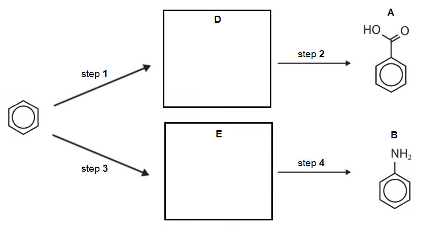
(c)(i) Suggest the reagents for steps 1–4. [4 marks]
(c)(ii) Draw the structures of compounds D and E in the boxes. [2 marks]
The route shown in Fig. 4.3 is proposed for the synthesis of compound C.
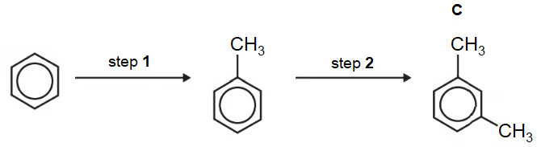
(d)(i) Suggest one set of reagents and conditions that could be used for both steps. [2 marks]
(d)(ii) Suggest why step 2 is less likely to occur. [1 mark]
Show mark scheme / model answer
- (a) A is benzoic acid; B is phenylamine or aminobenzene; C is 1,3-dimethylbenzene.
[3] - (b) The carboxylic acid group in A is electron-withdrawing and activates the 3- and 5-positions. The amino group in B is electron-donating and activates the 2-, 4- and 6-positions.
[2] - (c)(i)
- Step 1: hot alkaline potassium manganate(VII), \(\ce{KMnO4}\), under reflux.
- Step 2: dilute hydrochloric acid, to acidify the benzoate salt.
- Step 3: concentrated sulfuric acid and concentrated nitric acid, for nitration.
- Step 4: tin and concentrated hydrochloric acid, under reflux.
[4]
- (c)(ii) D is potassium benzoate, \(\ce{C6H5COOK}\), before acidification. E is nitrobenzene, \(\ce{C6H5NO2}\), before reduction to phenylamine.
[2] - (d)(i) Use chloromethane, \(\ce{CH3Cl}\), with an aluminium chloride catalyst, \(\ce{AlCl3}\), for each Friedel–Crafts alkylation step.
[2] - (d)(ii) The methyl group already attached to the ring is electron-donating and activates the 2-, 4- and 6-positions, not the 3-position. Therefore formation of the 1,3-isomer in step 2 is less likely.
[1]
Example 5 · Synthesis of 1-(3-aminophenyl)ethanol · 7.8 SQ Easy Q5
1-(3-aminophenyl)ethanol can be synthesised from benzene by the route shown in Fig. 5.1.
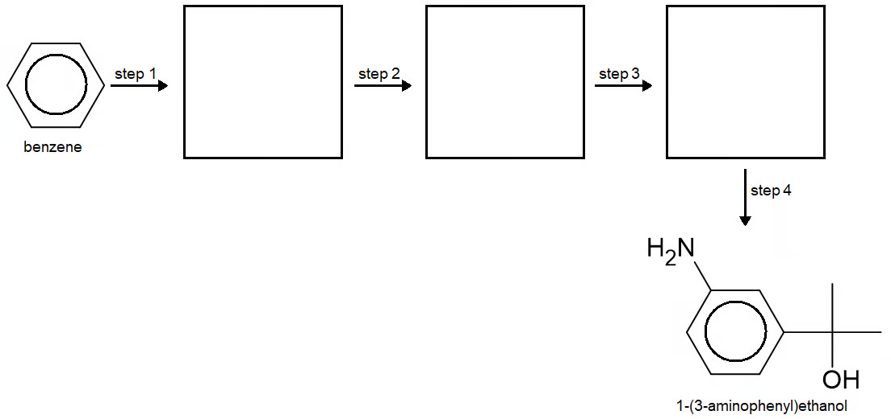
Step 1 involves a reaction with concentrated nitric acid and concentrated sulfuric acid.
(a)(i) Name compound A and state the reaction conditions for step 1. [2 marks]
(a)(ii) Name the mechanism for the conversion of benzene into compound A and identify the specific species that reacts with benzene. [2 marks]
Step 2 is the reaction of compound A with ethanoyl chloride, \(\ce{CH3COCl}\), in the presence of a suitable catalyst.
(b) Identify the catalyst required for this reaction and write an equation to show how the catalyst forms the electrophile for this reaction. [1 mark]
Step 3 is the reaction of compound B with tin and hydrochloric acid, converting a nitro group into an amino group.
(c) State two changes that occur to compound B during this reaction to show that reduction has taken place. [1 mark]
Step 4 is the reduction of compound C to 1-(3-aminophenyl)ethanol using \(\ce{NaBH4}\). The structure of 1-(3-aminophenyl)ethanol is repeated in Fig. 5.2.
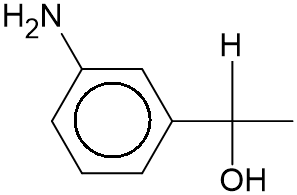
(d)(i) Draw a circle around the aliphatic functional group that is formed after the reaction of compound C with \(\ce{NaBH4}\). [1 mark]
(d)(ii) Draw the structure of compound C. [1 mark]
Show mark scheme / model answer
(a)(i) A is nitrobenzene. Heat/reflux the benzene with concentrated nitric acid and concentrated sulfuric acid, typically at about \(25\)–\(60\,^{\circ}\mathrm{C}\).
[2](a)(ii) The mechanism is electrophilic substitution. The attacking species is the nitronium ion, \(\ce{NO2+}\).
[2](b) The catalyst is aluminium chloride, \(\ce{AlCl3}\). It generates the acylium ion by:
\[\ce{CH3COCl + AlCl3 -> CH3CO+ + AlCl4-}\]
[1](c) Oxygen is lost and hydrogen is gained when \(\ce{-NO2}\) is converted into \(\ce{-NH2}\). These are both evidence of reduction.
[1](d)
- (i) The newly formed aliphatic functional group is the secondary alcohol, \(\ce{-CH(OH)CH3}\).
- (ii) C is the corresponding ketone, 1-(3-nitrophenyl)ethanone, with condensed structure \(\ce{3-NO2-C6H4-COCH3}\). \(\ce{NaBH4}\) reduces the ketone group to the secondary alcohol.
[2]
7.8 Organic Synthesis (A Level Only) - Medium
Example 6 · Ibuprofen and paracetamol · 7.8 SQ Medium Q1
Ibuprofen and paracetamol are pain-relief drugs. Both contain the aryl (benzene) functional group.
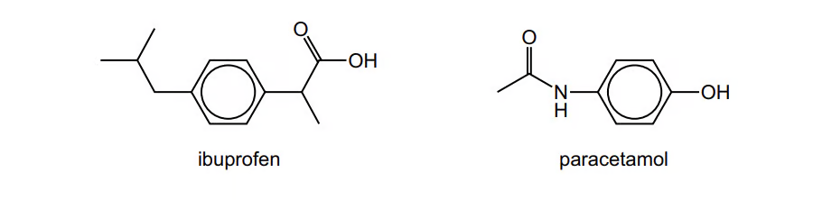
(a) Name the other functional groups present in each molecule. [2 marks]
Ibuprofen contains a chiral centre and has two enantiomers.
(b)(i) State one similarity and one difference in the physical or chemical properties between the two enantiomers. [1 mark]
(b)(ii) Explain what is meant by racemic mixture. [1 mark]
Paracetamol reacts separately with the two reagents shown in the table. Complete the table by drawing the structures of the organic products formed and stating the types of reaction.
| Reagent | Organic product structure | Type of reaction |
|---|---|---|
| \(\ce{LiAlH4}\) | ||
| an excess of \(\ce{Br2(aq)}\) |
(c) [3 marks]
One of the steps in the manufacture of ibuprofen is shown in Fig. 8.2.
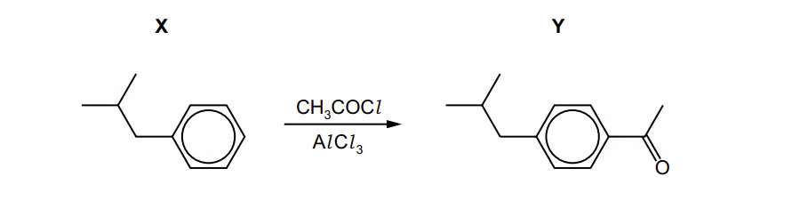
(d)(i) Write an equation to show how \(\ce{AlCl3}\) generates the electrophile for the conversion of X into Y. [1 mark]
(d)(ii) Draw the mechanism for the conversion of X into Y. Include all necessary curly arrows and charges. [3 marks]
(d)(iii) Write an equation to show how the \(\ce{AlCl3}\) is regenerated. [1 mark]
Show mark scheme / model answer
(a) Ibuprofen contains a carboxylic acid. Paracetamol contains a phenol and a secondary amide.
[2](b)(i) Similarity: enantiomers have identical physical and chemical properties in an achiral environment. Difference: they rotate plane-polarised light in opposite directions and can have different biological activity.
[1](b)(ii) A racemic mixture contains equal amounts of the two enantiomers.
[1](c)
- With excess \(\ce{LiAlH4}\), the secondary amide is reduced to a secondary amine: the paracetamol acetamide group becomes \(\ce{-NHCH3}\); this is reduction.
- With excess aqueous bromine, the phenol ring undergoes substitution at the positions activated by \(\ce{-OH}\). The available 2- and 4-positions are brominated, giving the corresponding 2,4-dibrominated product; this is electrophilic substitution.
[3]
(d)(i)
\[\ce{CH3COCl + AlCl3 -> CH3CO+ + AlCl4-}\]
(d)(ii) The benzene \(\pi\) system attacks the positively charged carbon of the acylium ion. A sigma complex forms with a positive charge delocalised around the ring. A curly arrow from the C–H bond returns the electrons to the ring, restoring aromaticity and releasing \(\ce{H+}\).
[3](d)(iii)
\[\ce{H+ + AlCl4- -> HCl + AlCl3}\]
Example 7 · Cuminyl alcohol synthesis · 7.8 SQ Medium Q2
Cuminyl alcohol can be synthesised from benzene by the route shown in Fig. 2.1.
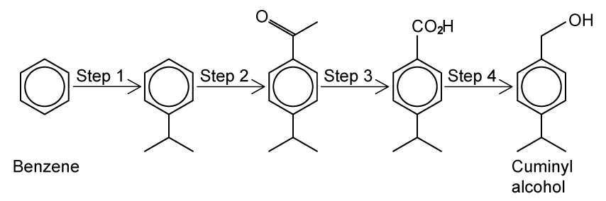
(a) Suggest reagents and conditions for steps 1–4. [4 marks]
(b) Name the mechanism of step 2 and state the type of reaction in step 4. [2 marks]
(c) Draw the reaction mechanism for step 2. [4 marks]
(d) Deduce the number of peaks that would be present in the \(^{13}\ce{C}\) NMR spectrum of cuminyl alcohol. [1 mark]
Show mark scheme / model answer
(a) One suitable sequence is:
- Step 1: propan-2-yl chloride with \(\ce{AlCl3}\), heat; this installs the isopropyl group by Friedel–Crafts alkylation.
- Step 2: ethanoyl chloride, \(\ce{CH3COCl}\), with \(\ce{AlCl3}\), heat; this is Friedel–Crafts acylation.
- Step 3: alkaline iodine, \(\ce{I2/NaOH}\), followed by acidification; this converts the methyl ketone side chain into a carboxylic acid.
- Step 4: \(\ce{LiAlH4}\) in dry ether, followed by hydrolysis; this reduces the carboxylic acid to a primary alcohol.
[4]
(b) Step 2 is electrophilic aromatic substitution. Step 4 is reduction.
[2](c) First generate the acylium ion:
\[\ce{CH3COCl + AlCl3 -> CH3CO+ + AlCl4-}\]
The benzene ring attacks the positively charged carbon of \(\ce{CH3CO+}\), forming a sigma complex. The C–H bond then supplies electrons back to the ring, restoring aromaticity and producing the acylated arene. The catalyst is regenerated when \(\ce{AlCl4-}\) accepts the proton.
[4](d) The spectrum has seven peaks, because symmetry makes several carbon atoms chemically equivalent.
[1]
Example 8 · Ethane to ethanal and a branched ester · 7.8 SQ Medium Q3
(a) Outline how ethanal can be synthesised from ethane in three steps.
\[\ce{ethane -> chloroethane -> ethanol -> ethanal}\]
State the reaction conditions and reagents and name the type of reaction taking place.
(i) Step 1 [3 marks]
(ii) Step 2 [3 marks]
(iii) Step 3 [3 marks]
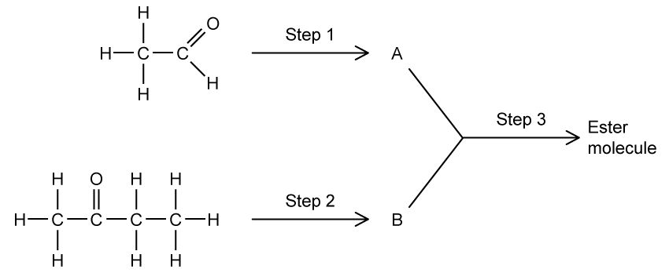
(b) The reaction pathway in Fig. 3.1 is used to produce compounds A and B, which when reacted together form a branched ester molecule, compound C. Suggest suitable reagents and conditions for the synthesis of compound A via step 1 and give the name for this type of reaction. [3 marks]
(c) The ketone in part (a) must be converted to compound B to produce the ester.
(i) Name the molecule produced from step 2. [1 mark]
(ii) Name the type of reaction involved in step 2 and suggest suitable reagents and conditions. [2 marks]
(d) Draw the skeletal formula of the ester formed from the reaction scheme. [1 mark]
Show mark scheme / model answer
- (a)(i) Use chlorine, \(\ce{Cl2}\), in UV light or at high temperature. This is free-radical substitution/halogenation.
[3] - (a)(ii) Heat chloroethane under reflux with aqueous \(\ce{NaOH}\) or \(\ce{KOH}\). This is nucleophilic substitution/hydrolysis.
[3] - (a)(iii) Heat ethanol with acidified potassium dichromate(VI), then distil the ethanal as it forms. This is oxidation.
[3] - (b) Oxidise the aldehyde starting material using acidified potassium dichromate(VI) or acidified potassium manganate(VII), and heat/reflux. This is oxidation to a carboxylic acid.
[3] - (c)(i) The product is butan-2-ol.
[1] - (c)(ii) This is reduction of the ketone, using \(\ce{LiAlH4}\) in dry ether or \(\ce{NaBH4}\), followed by hydrolysis if needed.
[2] - (d) The ester is formed by esterification of the carboxylic acid A with the secondary alcohol B. The displayed structure must contain the acid-derived \(\ce{-C(=O)O-}\) group and the branched butan-2-yl group from B.
[1]
Example 9 · Noradrenaline and nitrile synthesis · 7.8 SQ Medium Q4
Noradrenaline shown in Fig. 4.1 is a hormone and neurotransmitter, which is released during stress to stimulate the heart and increase blood pressure.
(a) State the names of three functional groups in the noradrenaline molecule. [3 marks]
Consider the following two-step synthesis of noradrenaline from dihydroxybenzaldehyde in Fig. 4.2.
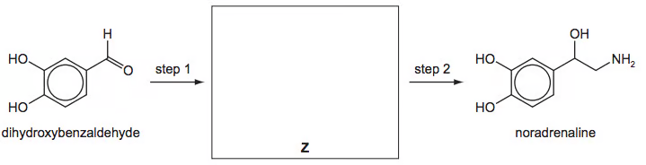
(b) Draw the structure of the intermediate Z in the box. Suggest reagents for steps 1 and 2. [3 marks]
Dihydroxybenzaldehyde reacts with \(\ce{Br2(aq)}\).
(c) Describe what you would see during this reaction and draw the structure of the product. [2 marks]
Show mark scheme / model answer
- (a) Any three of: phenol, primary alcohol, amine and arene/benzene.
[3] - (b) Step 1 adds one carbon using \(\ce{HCN}\) and \(\ce{NaCN}\) or another basic cyanide system, forming the hydroxynitrile from the aldehyde. Step 2 reduces the nitrile using hydrogen and nickel, \(\ce{LiAlH4}\) in dry ether, or sodium in ethanol. Z is the hydroxynitrile, containing the original aromatic ring, \(\ce{-CH(OH)CN}\) and both phenolic \(\ce{-OH}\) groups.
[3] - (c) Bromine water is decolourised, and a white precipitate forms. Electrophilic substitution occurs on the activated phenol ring; two or three bromine atoms may be shown at the available activated positions.
[2]
Example 10 · Raspberry compound and an azo dye · 7.8 SQ Medium Q5
Compound G is a naturally occurring aromatic compound that is present in raspberries.
(a) Identify the functional groups present in compound G. [2 marks]
(b) Complete Table 5.1 with information about the reactions of the three stated reagents with compound G.
| Reagent | Observation | Structure of organic product | Type of reaction |
|---|---|---|---|
| \(\ce{Na(s)}\) | |||
| \(\ce{Br2(aq)}\) | |||
| \(\ce{I2/NaOH(aq)}\) |
[9 marks]
The dye H can be made from compound G by the route shown in Fig. 5.1.
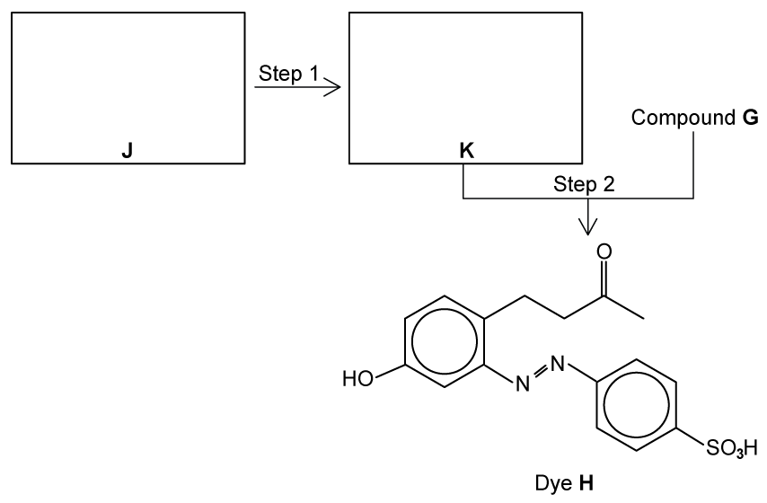
(c)(i) Draw the structures of the amine J and the intermediate K in the boxes. [2 marks]
(c)(ii) Suggest reagents and conditions for steps 1 and 2. [3 marks]
(d) Explain why dye H is very stable. [2 marks]
Show mark scheme / model answer
- (a) Compound G contains a phenol and a ketone.
[2] - (b)
- \(\ce{Na(s)}\): effervescence as hydrogen is released; the phenol is converted into its sodium phenoxide salt; redox.
- \(\ce{Br2(aq)}\): bromine water is decolourised and a white precipitate forms; bromination at the available 2- and 6-positions of the phenol ring; electrophilic substitution.
- \(\ce{I2/NaOH(aq)}\): a yellow precipitate of iodoform, \(\ce{CHI3}\), forms; the methyl ketone side chain undergoes the iodoform oxidation/hydrolysis reaction.
[9]
- (c)(i) J is an aromatic amine that can be diazotised, and K is the corresponding benzenediazonium salt, \(\ce{Ar-N2+Cl-}\).
[2] - (c)(ii) Step 1: react the amine with sodium nitrite and hydrochloric acid, generating nitrous acid in situ, at a temperature below \(10\,^{\circ}\mathrm{C}\). Step 2: add K to compound G in aqueous sodium hydroxide; this couples the diazonium ion to the activated phenol ring.
[3] - (d) The two benzene rings and the \(\ce{-N=N-}\) bridge form an extended delocalised \(\pi\)-electron system. Delocalisation across the azo linkage stabilises the dye.
[2]
7.8 Organic Synthesis (A Level Only) - Hard
Example 11 · Benzocaine synthesis and route choice · 7.8 SQ Hard Q1
Benzocaine is an ester-based compound that is used medicinally as a local anaesthetic in pain relievers and cough drops. One of the first industrial processes to manufacture benzocaine was the five-step reaction shown in Fig. 1.1.
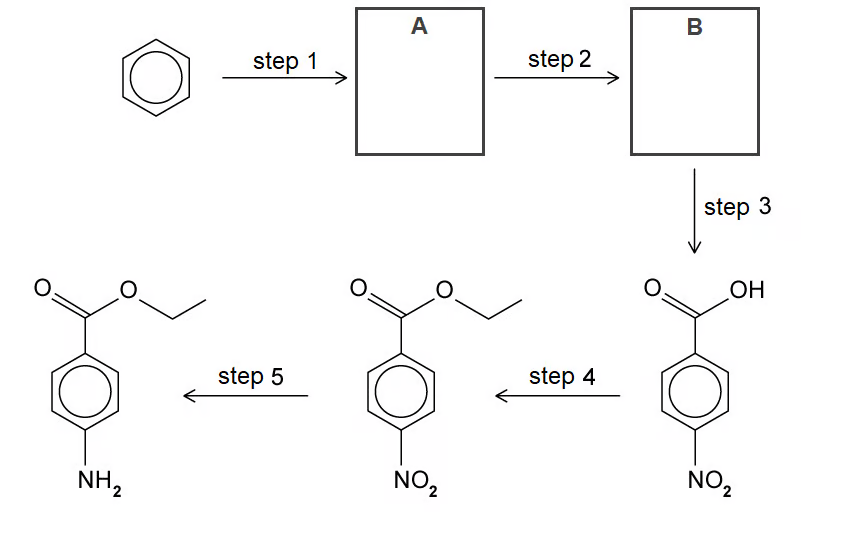
(a) Give the systematic name of benzocaine. [1 mark]
Step 1 involves the reaction of benzene with bromomethane.
(b)(i) State a suitable catalyst for step 1. [1 mark]
(b)(ii) Draw a mechanism for step 1. Include all necessary curly arrows, charges and the structure of A. [3 marks]
Concentrated sulfuric acid and concentrated nitric acid are used to form the ion required for step 2. The following equilibrium is the first step in the formation of the ion:
\[\ce{H2SO4 + HNO3 <=> HSO4- + H2NO3+}\]
(c)(i) State the roles of each acid in this reaction. [2 marks]
(c)(ii) Use your answer to part (i) to suggest the relative strengths of the acids. [1 mark]
(c)(iii) Different isomers with the molecular formula \(\ce{C7H7NO2}\) can be formed during step 2. Draw the structure of isomer B and explain your answer. [2 marks]
(d) Suggest reagents and conditions for steps 3–5 of the synthesis. [4 marks]
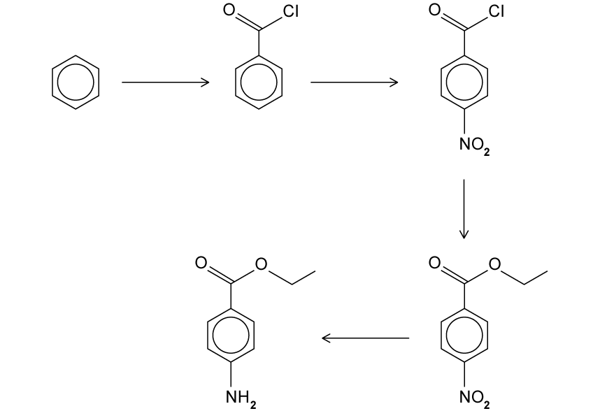
(e)(i) Suggest why this reaction scheme is an improvement. [1 mark]
(e)(ii) Suggest why this reaction scheme may not work. [1 mark]
Show mark scheme / model answer
(a) Ethyl 4-aminobenzoate.
[1](b)(i) Aluminium tribromide, \(\ce{AlBr3}\), or iron(III) bromide, \(\ce{FeBr3}\).
[1](b)(ii) The catalyst forms the methyl electrophile:
\[\ce{CH3Br + AlBr3 -> CH3+ + AlBr4-}\]
The benzene \(\pi\) system attacks \(\ce{CH3+}\), forming a positively charged sigma complex. A curly arrow from the C–H bond restores the aromatic ring and gives methylbenzene, compound A.
[3](c)(i) Sulfuric acid donates a proton and is the Brønsted–Lowry acid. Nitric acid accepts a proton and is the Brønsted–Lowry base.
[2](c)(ii) Sulfuric acid is the stronger acid because it donates the proton to nitric acid.
[1](c)(iii) Methylbenzene is electron-donating and directs electrophilic substitution to the 2-, 4- and 6-positions. Isomer B is therefore 1-methyl-4-nitrobenzene (4-nitrotoluene), with the nitro group para to the methyl group.
[2](d)
- Step 3: hot alkaline \(\ce{KMnO4}\) under reflux, then acidification, to oxidise the methyl side chain to a carboxylic acid.
- Step 4: ethanol, warm, with concentrated sulfuric acid catalyst, to form the ethyl ester.
- Step 5: tin and concentrated hydrochloric acid under reflux, or iron and concentrated hydrochloric acid under reflux, to reduce the nitro group to an amino group.
[4]
(e)(i) The alternative route has fewer steps, improving efficiency and usually atom economy.
[1](e)(ii) Nitration of benzoyl chloride is directed mainly to the meta position by the electron-withdrawing acyl chloride group, so the required para-nitro isomer is not formed preferentially.
[1]
Example 12 · Deduction of compounds A–E · 7.8 SQ Hard Q2
The carbon-13 (\(^{13}\ce{C}\)) NMR spectrum of compound A, \(\ce{C3H8O}\), contains three peaks. Compound A reacts with acidified potassium dichromate to give a mixture of compounds B and C. Compound C reacts with thionyl chloride, \(\ce{SOCl2}\), to form compound D. Compound D reacts with phenol to form compound E, \(\ce{C9H10O2}\).
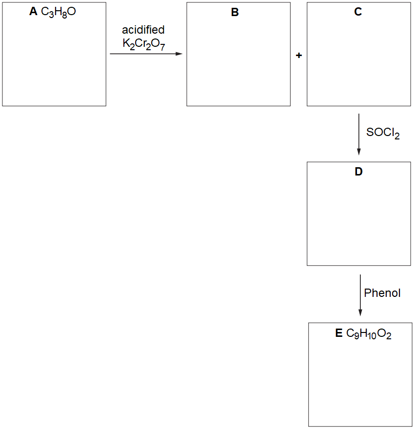
(a) Draw the structures of compounds A, B, C, D and E in the boxes. [5 marks]
(b) A mixture of compound B and compound C is formed when compound A reacts with acidified potassium dichromate.
(i) Explain how the mixture can be separated into compounds B and C. [2 marks]
(ii) Suggest an improvement to the reaction with acidified potassium dichromate to ensure the production of compound C only. [1 mark]
(c) When heated in the presence of sodium hydroxide, compounds C and D can both react with phenol to form compound E.
(i) Draw a mechanism for the formation of compound E from compound D and an appropriate nucleophile. Include all necessary curly arrows and charges. [3 marks]
(ii) Under these conditions, the reaction of compound D with phenol is faster than the reaction of compound C. Suggest why. [1 mark]
Show mark scheme / model answer
- (a) A is propan-1-ol, \(\ce{CH3CH2CH2OH}\). Controlled oxidation gives B, propanal, \(\ce{CH3CH2CHO}\), while complete oxidation gives C, propanoic acid, \(\ce{CH3CH2COOH}\). Reaction with \(\ce{SOCl2}\) gives D, propanoyl chloride, \(\ce{CH3CH2COCl}\). Reaction of D with phenol gives E, phenyl propanoate, \(\ce{CH3CH2COOC6H5}\).
[5] - (b)(i) Separate the products by distillation. Propanoic acid has a higher boiling point than propanal because it forms strong hydrogen bonds; propanal has only dipole–dipole attractions.
[2] - (b)(ii) Reflux the alcohol with acidified potassium dichromate so that the primary alcohol is oxidised completely to the carboxylic acid rather than being distilled off as the aldehyde.
[1] - (c)(i) Sodium hydroxide deprotonates phenol to form phenoxide, \(\ce{C6H5O-}\). The phenoxide oxygen attacks the partially positive carbonyl carbon of propanoyl chloride, the C=O electrons move onto oxygen, and a tetrahedral intermediate forms. The intermediate reforms the carbonyl and expels \(\ce{Cl-}\), producing phenyl propanoate.
[3] - (c)(ii) The C–Cl bond in the acyl chloride is more strongly electron-withdrawing than the C–OH bond in the acid. The carbonyl carbon of D therefore has a larger partial positive charge and is more susceptible to attack by phenoxide.
[1]
Example 13 · 2-bromopropane to propanone · 7.8 SQ Hard Q3
Propanone can be synthesised from 2-bromopropane according to the reaction scheme shown in Fig. 3.1.
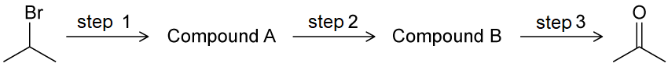
Step 1 is not completed in acidic conditions.
(a) Suggest reagents and conditions for each of steps 1 to 3. [5 marks]
(b) Suggest one reaction, including reagents and conditions, to replace steps 1 and 2. [2 marks]
(c) Using structural formulae, write an equation for the reaction of compound B with an oxidising agent, \([\ce{O}]\), to form propanone. [1 mark]
Show mark scheme / model answer
(a)
- Step 1: heat 2-bromopropane under reflux with ethanolic sodium hydroxide or ethanolic potassium hydroxide. This is elimination to form propene.
- Step 2: react propene with steam at about \(300\,^{\circ}\mathrm{C}\) in the presence of concentrated sulfuric or phosphoric acid catalyst. This is hydration to form propan-2-ol.
- Step 3: heat propan-2-ol with acidified potassium dichromate(VI), \(\ce{K2Cr2O7}\), to oxidise it to propanone.
[5]
(b) Use aqueous sodium hydroxide, heated under reflux, to replace bromine directly by hydroxide. This is nucleophilic substitution and gives propan-2-ol in one step.
[2](c)
\[\ce{CH3CH(OH)CH3 + [O] -> CH3COCH3 + H2O}\]
[1]
Example 14 · Ethene to 1-aminopropane · 7.8 SQ Hard Q4
Ethene is used in the radical-free synthesis of 1-aminopropane as shown:
\[\ce{ethene ->[step 1] compound\ A ->[step 2] compound\ B ->[step 3] propylamine}\]
(a) Identify which step of the reaction scheme could use hydrogen cyanide. Explain your answer. [2 marks]
(b) Draw the skeletal structure of compound A and state the reagents required for its formation. [2 marks]
(c) The final step of the reaction scheme forms 1-aminopropane from compound B. Name compound B and identify the type of reaction that compound B undergoes to form propylamine. Explain your answer. [2 marks]
Show mark scheme / model answer
- (a) Hydrogen cyanide is used in step 2. It cannot add directly to ethene because cyanide is a nucleophile and does not attack the electron-rich C=C bond. It also cannot be step 3 because reaction with cyanide forms a nitrile rather than an amine.
[2] - (b) Compound A is a one-carbon halogenoalkane, for example chloroethane, \(\ce{CH3CH2Cl}\). Form it by reacting ethene with hydrogen chloride, \(\ce{HCl}\), by electrophilic addition. A corresponding bromoalkane formed with \(\ce{HBr}\) is also acceptable.
[2] - (c) B is propanenitrile, \(\ce{CH3CH2CN}\). It undergoes reduction to form 1-aminopropane; the nitrile group gains hydrogen, for example with \(\ce{LiAlH4}\) in dry ether followed by hydrolysis.
[2]